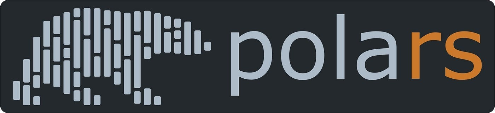

import polars as pl
s = pl.Series("example", [1, 2, 3, 4, 5])
s
shape: (5,)
| example |
|---|
| i64 |
| 1 |
| 2 |
| 3 |
| 4 |
| 5 |
Dataframes and Series
Nathaniel Clark
April 4, 2025
Recently I took a data science course that heavily utilized pandas for data manipulation in Python. Being curious about emerging technologies, I asked my instructor if I could use Polars instead. He agreed but cautioned that he wouldn’t have supporting materials for my alternative choice.
Throughout the course, I discovered a lack of beginner-friendly Polars resources for those new to data science. I primarily relied on official documentation, which presented some challenges along the way. Despite these obstacles, I persevered, learned a great deal, and successfully completed the class.
I’m writing this post to share what I’ve learned about Polars and provide an accessible introduction for newcomers to data manipulation libraries, especially those with limited prior experience in the field.

Polars is a modern data manipulation library for Python and Rust designed as a high-performance alternative to pandas, especially for large datasets. It features syntax that’s both human-readable and similar to R’s data manipulation paradigms. Polars stands out for three main reasons:
The two most common data structures in Polars are DataFrames and Series. Series are one-dimensional data structures where all elements share the same datatype. Think of a Series as a single column in a table - it’s essentially a named array of data.
Polars supports a variety of data types that fall into these major categories:
Creating a Series is straightforward with the following syntax:
pl.Series(name, values_list)
Where “name” is the label for your Series and “values_list” contains the data. Here’s a simple example:
DataFrames are tabular data structures (rows and columns) composed of multiple Series, with each column representing a single Series. These are the workhorses of data analysis and what you’ll use most frequently.
With DataFrames, you can write powerful queries to filter, transform, aggregate, and reshape your data efficiently.
DataFrames can be created in several ways:
In real-world environments, you’ll typically work with preexisting data, though understanding various creation methods is valuable. We’ll cover data import techniques later, but for now, here’s an example of a DataFrame created from a dictionary of lists:
# Create a DataFrame from a dictionary of lists
df = pl.DataFrame({
"name": ["Alice", "Bob", "Charlie", "David"],
"age": [25, 30, 35, 40],
"city": ["New York", "Boston", "Chicago", "Seattle"],
"salary": [75000, 85000, 90000, 95000]
})
df| name | age | city | salary |
|---|---|---|---|
| str | i64 | str | i64 |
| "Alice" | 25 | "New York" | 75000 |
| "Bob" | 30 | "Boston" | 85000 |
| "Charlie" | 35 | "Chicago" | 90000 |
| "David" | 40 | "Seattle" | 95000 |